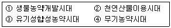
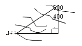

산림산업기사 (2010-07-25 기출문제)
1과목: 조림학
1. 벌구식 택벌작업급에 있어서 택벌구가 일순 택벌된 다음 최초의 택벌구로 벌채가 되돌아오는데 소요되는 기간을 무엇이라 하는가?
- 갱신기
- 윤벌기
- 회귀년
- 개량기
(정답률: 82%)

2. 상층임관을 구성하고, 상방광선을 충분히 받으며, 상당량의 측방광선도 받으 수 있는 수관을 가지고 있는 나무는?
- 우세목
- 피압목
- 중간목
- 준우세목
(정답률: 77%)
3. 간벌의 실행에 관한 설명 중 바른 것은?
- 지위가 나쁠수록 자주 실행한다.
- 일반적으로 겨울 또는 봄에 실시한다.
- 낙엽송의 간벌개시 임령은 30~40년 경이다.
- 활엽수의 경우 지위가 좋을수록 개시시기가 느려진다.
(정답률: 61%)
4. 조림시에 묘목간의 거리 2m, 간격 2.5m로 식재할 때에 조림면적 4ha 에 필요한 묘목본수는 다음 어느 것인가?
- 6000본
- 8000본
- 12000본
- 14000본
(정답률: 89%)
5. 장지와 단지 두 가지를 모두 가지고 있는 수종이 아닌 것은?
- 은행나무
- 낙엽송
- 자작나무
- 소나무
(정답률: 50%)
6. 잣나무의 시료종자 600g 중에 잡물이 120g 이나왔다. 순량율은?
- 85%
- 82%
- 72%
- 80%
(정답률: 77%)
7. 자엽지상위발아형에 속하는 수종은?
- 밤나무
- 칠엽수
- 호두나무
- 감나무
(정답률: 50%)
8. 다음 중 결실기가 50년 또는 그 이상인 것은?
- 참나무류
- 오리나무류
- 대나무류
- 소나무류
(정답률: 78%)
9. 제벌에 관한 설명으로 틀린 것은?
- 조림목이 임관을 형성한 뒤부터 간벌할 시기에 실행함
- 조림수종이 그 임지에 적합하여 성림이 잘될 것 같으면 침입한 천연생목은 원칙적으로 제거함
- 조림목 하나하나의 성장보다는 임상을 정비해서 임분 전체의 형질을 향상시키는 데 목적을 둠
- 비용만 들고 산물은 거의 이용되지 않으므로 임준의 형질향상을 위해 실시 시기를 늦추는 것이 유리함
(정답률: 73%)
10. 다음 수종 중 파종조림이 일반적으로 어려운 수종은?
- 잎갈나무
- 해송
- 상수리나무
- 밤나무
(정답률: 60%)
11. 다음에 제시된 토양 수분 중에서 수목의 수분대사 작용에 가장 유효하게 사용될 수 있는 것은?
- 중력수
- 모관수
- 흡착수
- 수화수
(정답률: 87%)
12. 환경 변화에 따른 수목의 기공개폐를 설명한 내용 중 틀린 것은?
- 온도가 높아지면(30~35℃) 기공이 닫힌다.
- 잎의 수분포텐셜이 낮으면 기공이 열린다.
- 엽육조직의 세포간극에 있는 CO2의 농도가 높으면 기공이 닫힌다.
- 순광합성이 가능한 정도의 광도이면 기공은 충분히 열린다.
(정답률: 72%)
13. 종자 파종 방법 중 조림지에 일정한 열간거리 (1~1.5m)를 정하고 약 20cm 폭으로 파종할 대조를 만든 후 일정한 묘간거리를 생각해서 파종하는 방법은?
- 산파
- 상파
- 조파
- 점파
(정답률: 59%)
14. 장령림에서 동해를 우려하여 시비를 피해야 되는 시기는?
- 늦가을에서 초봄
- 늦봄에서 초여름
- 늦여름에서 초가을
- 늦가을에서 초겨울
(정답률: 66%)
15. 강원도의 태백산맥 일대, 경북의 동북지역, 충북의 동쪽 등지에 분포하는 소나무로 춘양목이라고 하는 것은?
- 간혹송
- 강송
- 반송
- 백송
(정답률: 80%)
16. 다음 중 내생균근을 가지고 있는 수종은?
- 단풍나무류
- 소나무류
- 참나무류
- 자작나무류
(정답률: 58%)
17. 다음 그림은 종자의 내부형태, 즉 종자의 종단면, 횡단면의 구조를 나타내고 있다. 무슨 종자인가?(문제 오류로 그림이 없습니다. 정답은 1번입니다.)
- 낙우송
- 옻나무
- 물푸레나무
- 단풍나무
(정답률: 70%)
18. 산벌작업의 순서로 바른 것은?
- 후벌 → 하종벌 → 예비벌
- 하종벌 → 예비벌 → 후벌
- 예비벌 → 하종벌 → 후벌
- 예비벌 → 후벌 → 하종벌
(정답률: 86%)
19. 간벌작업의 목적과 거리가 먼 것은?
- 직경생장을 촉진하여 연륜폭이 넓어진다.
- 우랭개체를 남겨서 임준의 유전적 형질을 향상 시킨다.
- 조기에 간벌수확을 얻을 수 있으나, 산불의 위험성은 증대된다.
- 임목을 건전하게 발육시켜 여러 가지 해에 대한 저향력을 높인다.
(정답률: 67%)
20. 다음 중 우량묘에 대한 설명으로 맞는 것은?
- 병충해의 피해가 없는것
- 가지가 위쪽으로 많이 뻗은 것
- 근계 보다는 지상부의 발달이 좋은것
- 온도의 변화에 따라서 색깔이 자유자재로 변하는 묘목
(정답률: 70%)
2과목: 산림보호학
21. 새의 종류 중 군집생활로 인한 배출물과 식이물의 찌꺼기 등에 의해 임목을 고사시키는 것은?
- 백로, 왜가리
- 딱따구리, 멧비둘기
- 참새, 할미새
- 산까치, 박새
(정답률: 86%)
22. 야생동물 서식의 필수 구성요소에 해당되지 않는것은?
- 물
- 계절
- 먹이
- 피난처
(정답률: 81%)
23. 배나무 뿌리혹병(crown gall)을 발생시키는 원인이 되는 생물은?
- 선충
- 곰팡이
- 세균
- 바이러스
(정답률: 69%)
24. 보조제에 대한 설명으로 틀린 것은?
- 협력제는 주제의 살충 효력을 증진시킨다.
- 증량제는 주약제의 농도를 높이기 위해 사용한다.
- 유화제는 유제의 유화성을 높이기 위해 사용한다.
- 전착제는 약제의 현수성이나 확전성 또는 고착성을 돕는다.
(정답률: 68%)
25. 번데기로 월동하는 해충은?
- 미국흰불나방
- 어스렝이나방
- 매미나방
- 밤나무혹벌
(정답률: 87%)
26. 다음 중 년간 발생횟수가 가장 많은 해충은?
- 솔나방
- 솔잎혹파리
- 미국흰불나방
- 오리나무잎벌레
(정답률: 87%)
27. 충영을 형성하는 산림해충은?
- 솔나방
- 소나무좀
- 솔잎혹파리
- 솔껍질깍지벌레
(정답률: 70%)
28. 농약의 제형명과 영문약자가 서로 일치하지 않는것은?
- 입제-GR
- 유제-EC
- 정제-TB
- 훈증제-FU
(정답률: 54%)
29. 소나무 해충 중 5령충으로 월동을 하여 이듬해 4월경부터 잎을 갉아먹는 해충은?
- 솔나방
- 소나무좀
- 솔잎혹파리
- 솔껍질깍지벌레
(정답률: 74%)
30. 포플러 잎녹병균의 녹포자는 어느 식물에 형성되는가?
- 포플러
- 낙엽송
- 소나무
- 쑥부쟁이
(정답률: 66%)
31. 다음은 시대별로 농약의 발달사를 전개할 때 사용하는 명칭이다. 이를 발달사 순으로 옳게 나열한것은?

- ② - ④ - ③ - ①
- ① - ③ - ② - ④
- ④ - ③ - ② - ①
- ③ - ② - ④ - ①
(정답률: 58%)
32. 다음 중 밤나무 줄기마름병균의 전파에 가장 중요한 역할을 하는 것은?
- 바람
- 종자
- 토양
- 기주식물
(정답률: 56%)
33. 공장, 자동차 등의 연료연소과정에서 나오는 질소산화물에 수목이 피해를 받으면 특징적으로 나타나는 주 피해 증후는?
- 황화현상
- 엽소현상
- 괴사현상
- 잎의 표면에 수침상의 반점 현상
(정답률: 47%)
34. 삼나무 붉은마름병에 대한 설명으로 틀린 것은?
- 병원균은 삼나무의 병환부에서 월동을 한다.
- 우리나라와 일본에 분포하고 묘포에서 발생한다.
- 묘목의 정단 끝부분부터 말라서 아래로 피해가 진전된다.
- 4월 하순에서 10월 상순까지 4-4식 보르도액으로 방제를 한다.
(정답률: 40%)
35. 수목병의 전반에 관여하는 매개충이 마름무늬매미충에 의한것은?
- 잣나무 털녹병
- 밤나무 줄기마름병
- 대추나무 빗자루병
- 느릅나무 시들음병
(정답률: 65%)
36. 새집을 인공적으로 조성하려고 한다. 박새류 집의 입구 구멍의 크기로 가장 적당한 것은?
- 2.8cm
- 5.8cm
- 8.8cm
- 11.8cm
(정답률: 49%)
37. 경기도 가평에서 처음 발견된 병으로 줄기에 병징이 나타나면 어린나무는 대부분이 1~2년 내에 말라 죽고 20년생 이상의 큰 나무는 병이 수년간 지속되다가 마침내 말라 죽는 수병은?(문제와 보기 내용이 맞지 않은 것 같습니다. 정확한 문제와 보기 내용을 아시는분 께서는 오류 신고를 통하여 내용 작성 부탁 드립니다. 정답은 1번입니다.)
- 벌기령을 단축한다.
- 가지치기를 실시한다.
- 중간기주를 제거한다.
- 병든 나무를 제거한다.
(정답률: 64%)
38. 소나무좀의 방제법으로 적합하지 않은 것은?
- 이목의 박피
- 등화 유살법
- 기생성 천적 보호
- 각종 피해목 제거
(정답률: 59%)
39. 일반적으로 자주빛날개무늬병이 가장 잘 발생하는 환경조건은?
- 건조한 토양
- 과습한 토양
- 토양 산도가 높은 토양
- 낙엽 등 미분해 유기물이 많은 토양
(정답률: 63%)
40. 뽕나무 오갈병의 원인이 되는 병원체는?
- 세균
- 곰팡이
- 바이러스
- 파이토플라스마
(정답률: 78%)
3과목: 임업경영학
41. 육림비 중 가장 큰 비중을 차지하는 것은 어느 것인가?
- 이자
- 지대
- 감가상각비
- 재료비
(정답률: 83%)
42. 임지기망가가 최고의 춴칙을 요하는 벌기령은?
- 자연적 벌기령
- 토지순수익 최대 벌기령
- 임지 최대의 벌기령
- 산림순수익 최대 벌기령
(정답률: 45%)
43. 1년생부터 벌기까지 각 영계의 임분을 구비하고 또한 각 영계 임분의 면적이 동일한 것을 무엇이라 하는가?
- 법정 임분 배치
- 법정 생장량
- 법정 축적
- 법정 영급 분배
(정답률: 79%)
44. 유형고정자산에 감가가 발생하는 요인 중 물리적 감가에 해당되는 것은?
- 부적응에 의한 감가
- 진부화에 의한 감가
- 경제적 요인에 의한 감가
- 마모, 손상 및 오손에 의한 감가
(정답률: 72%)
45. 흉고직경 측정 자료가 2cm 괄약으로 정리되었을 경우, 흉고직경 10cm는 어떤 범위의 흉고직경 측정치에 속하는가?
- 8.0~10.0cm
- 10.0~12.0cm
- 9.5~11.5cm
- 9.1~11.0cm
(정답률: 54%)
46. 금년에 1000만원의 간벌수입이 있었다. 연이율이 6%라 할 때, 10년 후의 후가는 약 얼마인가? [단, (1+0.06)10의 값은 후가식 계수표에서 1.7908이다.]
- 17908000원
- 10600000원
- 10000000원
- 7908000원
(정답률: 66%)
47. 다음 중 산림조사에서 지황으로서 조사할 사항이 아닌 것은?
- 지세
- 임종
- 지위
- 지리
(정답률: 76%)
48. 가장 이상적인 산림구조는?
- 장령림이 많은 산림
- 유령림이 많은 산림
- 노령(성숙)림이 많은 산림
- 유령림, 장령림, 노령(성숙)림이 골고루 있는 산림
(정답률: 77%)
49. 휴양임업의 간접적 효과가 아닌 것은?
- 보호적 기능
- 정서함양 기능
- 대기정화 기능
- 환경보전적 기능
(정답률: 39%)
50. 직경의 측정에 적합하지 않은 기구는?
- 포물선윤척
- 덴드로미터
- 스피겔릴라스코프
- 빌티모아스틱
(정답률: 62%)
51. 투자의 상대적 유이성을 판단하는 기준을 투자효율이라고 하는데, 투자효율의 결정방법이 아닌 것은?
- 회수기간법
- 투자이익율법
- 임의가치법
- 수익비용율법
(정답률: 64%)
52. 재적성장량 측정에서 성장량의 종류를 수목의 성장 및 임목의 부분에 따라 분류할 때 수목의 성장에 따른 분류에 속하지 않는 것은?
- 재적성장
- 수고성장
- 형질성장
- 등귀성장
(정답률: 35%)
53. 취득원가가 500000원이고, 잔존계기가 50000원으로 추정되는 기계톱이 있다. 이 톱의 총 사용가능시간은 90000시간, 실제 작업시간이 45000시간일 때 총 감가상각비를 비례계산법에 의해 계산하면?
- 225000원
- 250000원
- 350000원
- 450000원
(정답률: 63%)
54. 임업노동과 관련된 일반적인 특성에 대한 설명으로 관계가 가장 먼 것은?
- 단위면적당 노동량이 많으므로 노동분쟁의 발생소지가 많다.
- 작업장소인 산림까지의 이동시간이 길어서 실제작업 시간이 짧다.
- 농업노동력을 벌채 ㆍ 운반노동에 이용하려면 별도의 훈련을 시켜야 한다.
- 산림이 험하므로 노동을 절약하기 위한 기계의 도입이 어려울 뿐만 아니라 경영규모가 작아서 기계의 연속 가동일 수가 짧다.
(정답률: 79%)
55. 한 윤벌기에 대한 벌채안을 만들고 각 분기마다 벌채량을 균등하게 하여 재적수확의 보속을 도모하는 방법은?
- 생장량법
- 재적평분법
- 임분경제법
- 구획윤벌법
(정답률: 72%)
56. 법정림이 산림생산의 보속이 완전히 실현되어 경영의 목적에 따라 벌채가 이루어진다고 할 때 벌채로 인한 희생은 나타나지 않는 산림이므로 이러한 상태를 법정상태라고 한다. 일반적으로 법정상태의 4가지 요건에 해당되지 않는 것은?
- 법정수확
- 법정축적
- 법정생장량
- 법정영급분배
(정답률: 67%)
57. 우리나라 국유림에 적용하는 수종별 기준벌기령 중 틀린 것은?
- 소나무 70년
- 낙엽송 60년
- 잣나무 70년
- 리기다 60년
(정답률: 36%)
58. 임지기망가(Se)는 이율이 높을수록 어떻게 변화하는가?
- 작아진다.
- 커진다.
- 관련없다.
- 일정하다.
(정답률: 68%)
59. 임목의 평가계산식 중 복리계산을 하지 않아도 되는 것은?
- Lehr식
- Heyer식
- Glaser식
- Faustmann식
(정답률: 64%)
60. 다음 임업 수입 중 주수입에 속하는 것은?
- 수피 생산
- 열매 생산
- 토석 채취
- 죽재 생산
(정답률: 59%)
4과목: 산림공학
61. 임도 기계화 시공에서 수중굴착 및 구조물의 기초 바닦 등과 같은 상당히 깊은 범위의 굴착과 호퍼(hopper)작업에 적당한 셔블(shovel)계 기계는?
- 드랙라인
- 크레인
- 클램셀
- 파워셔블
(정답률: 63%)
62. 비탈다듬기공사 후에 선떼붙이기를 위한 단끊기 공사를 설계할 때 계단나비는 일반적으로 얼마로하는가?
- 30~50cm
- 50~70cm
- 70~90cm
- 90~110cm
(정답률: 64%)
63. 임도밀도와 관련된 설명으로 틀린 것은?
- 임도밀도는 산림의 단위 면적 당 임도 연장으로 나타낸다.
- 임목 축적이 증가할수록 일반적으로 적정임도 밀도는 높아진다.
- 임도밀도의 기본 단위는 m/ha 이다.
- 임도밀도가 높아지면 평균집재거리는 길어진다
(정답률: 63%)
64. 산림의 합리적인 경영을 위한 임도망 계획 시 고려할 사항으로 잘못 기술된 것은?
- 일기 및 계절에 따른 운재능력에 제한이 없어야 한다.
- 운반도중 목재 파손 최소롸를 고려하고, 신속한 운반이 되도록 한다.
- 운반량에 제한이 없도록 한다.
- 운재방법이 다양화되도록 한다.
(정답률: 56%)
65. 착공지점의 표고가 100m, 도착지점의 표고는 500m인 산지에 종단경사 6%인 임도를 시공하고자 한다. 임도시공 예정노선의 도상길이는 약 얼마인가?(오류 신고가 접수된 문제입니다. 반드시 정답과 해설을 확인하시기 바랍니다.)

- 1.7Km
- 4.0Km
- 6.7Km
- 8.3Km
(정답률: 28%)
66. 복원중 (문제 오류로 정답은 3번입니다.)
- 복원중 (정확한 보기내용을 아시는분께서는 오류 신고를 통하여 보기 내용 작성 부탁드립니다.)
- 복원중 (정확한 보기내용을 아시는분께서는 오류 신고를 통하여 보기 내용 작성 부탁드립니다.)
- 복원중 (정확한 보기내용을 아시는분께서는 오류 신고를 통하여 보기 내용 작성 부탁드립니다.)
- 복원중 (정확한 보기내용을 아시는분께서는 오류 신고를 통하여 보기 내용 작성 부탁드립니다.)
(정답률: 53%)
67. 임도를 시설하기 위해 절토를 하려고 한다. 지형 여건이 토사지역일 때 절토경사면의 기울기 기준은?
- 1:0.3~0.8
- 1:0.5~1.2
- 1:0.8~1.5
- 1:2.0~2.5
(정답률: 53%)
68. 표토침식을 방지하기 위해 침식력을 약화시키려고 할 때의 방법이 아닌 것은?
- 비탈면의 표면을 피복
- 비탈면의 경사를 완화
- 우수를 분산시켜 유하
- 나출면으로 흐르는 유량을 증가
(정답률: 79%)
69. 다음 콘크리트의 강도에 대한 설명으로 맞는 것은?
- 콘크리트의 양생기간이 짧을수록 좋은 콘크리트를 얻을 수 있다.
- 콘크리트의 압축강도는 재령 28일의 강도를 표준으로 한다.
- 가급적 물-시멘트비를 65% 이상으로 하는 것이 강도에 좋다.
- 콘크리트가 굳을 때까지 형태를 유지시켜 주는 구조물을 동바리라한다.
(정답률: 53%)
70. 유역면적이 60km2이고, 비유량이 12m3/s/km2일 때 최대홍수유량은 얼마인가?
- 720m3/s
- 360m3/s
- 240m3/s
- 120m3/s
(정답률: 70%)
71. 다음중 임도의 역할 및 효용에 속하지 않는 것은?
- 임업 총샌산의 증대
- 보건 휴양자원의 개발 및 제공
- 지역교통의 개선
- 임지의 효율적 보존
(정답률: 31%)
72. 산지침식에서 요사방지를 유형 분류할 때 황폐의 진행 상태 및 정도에 따라 초기단계로부터 올바르게 구분한 것은?
- 임간자지 → 척악임지 → 초기황폐지 → 황폐이행지 → 민둥산 → 특수황폐지
- 임간나지 → 초기황폐지 → 척악임지 → 황페이행지 → 특수황폐지 → 민둥산
- 척악임지 → 초기황폐지 → 황폐이행지 → 임간나지 → 특수황폐지 → 민둥산
- 척악임지 → 임간나지 → 초기황폐지 → 황폐이행지 → 민둥산 → 특수황폐지
(정답률: 67%)
73. 임도의 설계업무 중 실측의 내용이 아닌 것은?
- 구조물조사
- 토지소유관계조사
- 횡단측량
- 평면측량
(정답률: 75%)
74. 기계력에 의한 집재작업 중 가선집재방법의 장ㆍ단점을 잘못 기술한 것은?
- 기동성이 좋으며, 저가에 장비를 구입할 수 있다.
- 주위환경, 잔존 임분 및 목재에 피해가 적다.
- 낮은 임도밀도 지역에서의 작업이 가능하다.
- 급경사에서도 작업이 가능하나, 작업 생산성이 낮다.
(정답률: 64%)
75. 임목수확작업에서 필요한 기본적인 안전수칙을 정리한 것 중 올바르지 않은 것은?
- 만약의 경우를 대비하여 대피로를 설정해 놓는다.
- 과중한 작업은 기계력을 사용한다.
- 기계에 의한 작업 시 중력을 최대한 이용한다.
- 정기적으로 기계장비의 정기점검을 실시한다.
(정답률: 75%)
76. 산지침식의 형태 중 가속침식을 물침식과 중력침식으로 구분했을 때 물침식에 속하지 않는 것은?
- 유동형 침식
- 우수침식
- 하천침식
- 바다침식
(정답률: 75%)
77. 어느 산림에서 1ha 당 40m의 작업도 만의 노망을 갖고 있다면 집재거리는 얼마인가?
- 62.5m
- 125m
- 165m
- 250m
(정답률: 48%)
78. 비탈에 직접 거푸집을 설치하고 콘크리트치기를 하여 비탈 안정을 위한 틀을 만들어 그 안을 작은 돌이나 흙으로 채우고 녹화하는 비탈안정공법은?
- 비탈 격자틀 붙이기공법
- 비탈 힘줄박기공법
- 비탈 블록붙이기공법
- 비탈 지오웨이브공법
(정답률: 57%)
79. 다음 중 기계화 벌목작업의 특징으로서 맞지 않는것은?
- 지형이 험준한 지역에서는 작업이 곤란하다.
- 인력작업에 비해 안전하다.
- 벌목, 조재, 집재 등의 작업능률이 높다.
- 평탄지, 완경사지역에서만 작업이 가능하다.
(정답률: 66%)
80. 일반적으로 와이어로프의 단면기호 6 x 19 는 무엇을 의미하는가?
- 19본선 6꼬임
- 6본선 19꼬임
- 19스트랜드 6지름
- 19지름 6스트랜드
(정답률: 52%)